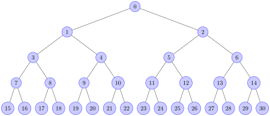

heapq — 힙 큐 알고리즘¶
소스 코드: Lib/heapq.py
이 모듈은 우선순위 큐 알고리즘이라고도 하는 힙(heap) 큐 알고리즘의 구현을 제공합니다.
Min-heaps는 모든 부모 노드가 자식 노드들 중 어떤 것보다 작거나 같은 값을 가지는 이진 트리입니다. 우리는 이 조건을 힙 불변성이라고 부릅니다.
최소 힙의 경우, 이 구현은 힙[k] <= 힙[2*k+1]와 힙[k] <= 힙[2* k+2]가 비교되는 요소가 존재하는 모든 k 에 대해 유지되는 리스트를 사용합니다. 요소는 0부터 계산됩니다. 최소 힙의 흥미로운 특성은 가장 작은 요소가 항상 루트인, 힙[0]이라는 것입니다.
최대 힙은 역변형 불변성을 만족합니다. 즉, 모든 부모 노드는 자식 노드들보다 큰 값을 가집니다. 이는 힙[2*k+1] <= 힙[k]와 힙[2* k+2] <= 힙[k]가 비교되는 모든 k 에 대해 유지되는 리스트로 구현됩니다. 루트인 힙[0]은 가장 큰 요소를 담고 있으며, heap.sort(reverse=True) 는 최대 힙 불변성을 유지합니다.
The heapq API differs from textbook heap algorithms in two aspects: (a)
We use zero-based indexing. This makes the relationship between the index for
a node and the indexes for its children slightly less obvious, but is more
suitable since Python uses zero-based indexing. (b) Textbooks often focus on
max-heaps, due to their suitability for in-place sorting. Our implementation
favors min-heaps as they better correspond to Python lists.
이 두 가지 측면 덕분에 힙을 놀랍지 않게 일반 파이썬 리스트로 볼 수 있습니다: 힙[0]이 가장 작은 항목이며, heap.sort() 가 힙 불변성을 유지합니다!
list.sort`와 마찬가지로, 이 구현은 최소 힙과 최대 힙 모두에 비교에 ``<`() 연산자만 사용합니다.
여기 아래 API와 이 문서는 비한정 용어로 heap 이 일반적으로 최소 힙을 지칭합니다. 최대 힙에 대한 API는 _max 접미사를 사용하여 이름을 지정합니다.
To create a heap, use a list initialized as [], or transform an existing list
into a min-heap or max-heap using the heapify() or heapify_max()
functions, respectively.
최소 힙을 위해 다음 함수들이 제공됩니다:
- heapq.heapify(x)¶
리스트 x 를 제자리에서 선형 시간으로 최소 힙으로 변환합니다.
- heapq.heappush(heap, item)¶
값 item 을 heap 에 푸시하여 최소 힙 불변성을 유지합니다.
- heapq.heappop(heap)¶
heap 에서 가장 작은 항목을 팝하고 반환하며, 최소 힙 불변성을 유지합니다. 힙이 비어 있으면
IndexError가 발생합니다. 항목을 팝하지 않고 가장 작은 항목에 접근하려면heap[0]을 사용하십시오.
- heapq.heappushpop(heap, item)¶
힙에 item을 푸시한 다음, heap에서 가장 작은 항목을 팝하고 반환합니다. 결합한 액션은
heappush()한 다음heappop()을 별도로 호출하는 것보다 더 효율적으로 실행합니다.
- heapq.heapreplace(heap, item)¶
heap에서 가장 작은 항목을 팝하고 반환하며, 새로운 item도 푸시합니다. 힙 크기는 변경되지 않습니다. 힙이 비어 있으면,
IndexError가 발생합니다.이 한 단계 연산은
heappop()한 다음heappush()하는 것보다 더 효율적이며 고정 크기 힙을 사용할 때 더 적합 할 수 있습니다. 팝/푸시 조합은 항상 힙에서 요소를 반환하고 그것을 item으로 대체합니다.반환된 값은 추가된 item보다 클 수 있습니다. 그것이 바람직하지 않다면, 대신
heappushpop()사용을 고려하십시오. 푸시/팝 조합은 두 값 중 작은 값을 반환하여, 힙에 큰 값을 남겨 둡니다.
최대 힙의 경우, 다음 함수들이 제공됩니다:
- heapq.heapify_max(x)¶
리스트 x 를 제자리에서 선형 시간으로 최대 힙으로 변환합니다.
Added in version 3.14.
- heapq.heappush_max(heap, item)¶
값 item 을 최대 힙 heap 에 푸시하여 최대 힙 불변성을 유지합니다.
Added in version 3.14.
- heapq.heappop_max(heap)¶
최대 힙 heap 에서 가장 큰 항목을 팝하고 반환하며, 최대 힙 불변성을 유지합니다. 최대 힙이 비어 있으면
IndexError가 발생합니다. 팝하지 않고 가장 큰 항목에 접근하려면maxheap[0]을 사용하십시오.Added in version 3.14.
- heapq.heappushpop_max(heap, item)¶
heap 에 item 을 푸시한 다음, heap 에서 가장 큰 항목을 팝하고 반환합니다. 이 결합된 동작은
heappush_max()다음에heappop_max()를 별도로 호출하는 것보다 더 효율적으로 실행됩니다.Added in version 3.14.
- heapq.heapreplace_max(heap, item)¶
최대 힙 heap 에서 가장 큰 항목을 팝하고 반환하며, 새 item 도 푸시합니다. 최대 힙의 크기는 변경되지 않습니다. 최대 힙이 비어 있으면
IndexError가 발생합니다.반환되는 값은 추가된 item 보다 작을 수 있습니다. 자세한 사용법에 대해서는 유사한 함수인
heapreplace()를 참조하십시오.Added in version 3.14.
이 모듈은 또한 힙 기반의 세 가지 범용 함수를 제공합니다.
- heapq.merge(*iterables, key=None, reverse=False)¶
여러 정렬된 입력을 단일 정렬된 출력으로 병합합니다 (예를 들어, 여러 로그 파일에서 타임 스탬프 된 항목을 병합합니다). 정렬된 값에 대한 이터레이터를 반환합니다.
sorted(itertools.chain(*iterables))와 비슷하지만 이터러블을 반환하고, 데이터를 한 번에 메모리로 가져오지 않으며, 각 입력 스트림이 이미 (최소에서 최대로) 정렬된 것으로 가정합니다.키워드 인자로 지정해야 하는 두 개의 선택적 인자가 있습니다.
key는 각 입력 요소에서 비교 키를 추출하는 데 사용되는 단일 인자의 키 함수를 지정합니다. 기본값은
None입니다 (요소를 직접 비교합니다).reverse는 불리언 값입니다.
True로 설정하면, 각 비교가 반대로 된 것처럼 입력 요소가 병합됩니다.sorted(itertools.chain(*iterables), reverse=True)와 유사한 동작을 달성하려면 모든 이터러블이 최대에서 최소로 정렬되어 있어야 합니다.버전 3.5에서 변경: 선택적 key와 reverse 매개 변수를 추가했습니다.
- heapq.nlargest(n, iterable, key=None)¶
iterable에 의해 정의된 데이터 집합에서 n 개의 가장 큰 요소로 구성된 리스트를 반환합니다. key가 제공되면 iterable의 각 요소에서 비교 키를 추출하는 데 사용되는 단일 인자 함수를 지정합니다 (예를 들어,
key=str.lower). 다음과 동등합니다:sorted(iterable, key=key, reverse=True)[:n].
- heapq.nsmallest(n, iterable, key=None)¶
iterable에 의해 정의된 데이터 집합에서 n 개의 가장 작은 요소로 구성된 리스트를 반환합니다. key가 제공되면 iterable의 각 요소에서 비교 키를 추출하는 데 사용되는 단일 인자 함수를 지정합니다 (예를 들어,
key=str.lower). 다음과 동등합니다:sorted(iterable, key=key)[:n].
마지막 두 함수는 작은 n 값에서 가장 잘 동작합니다. 값이 크면, sorted() 기능을 사용하는 것이 더 효율적입니다. 또한, n==1일 때는, 내장 min()과 max() 함수를 사용하는 것이 더 효율적입니다. 이 함수를 반복해서 사용해야 하면, iterable을 실제 힙으로 바꾸는 것이 좋습니다.
기본 예¶
힙 정렬은 모든 값을 힙으로 푸시한 다음 한 번에 하나씩 가장 작은 값을 팝 하여 구현할 수 있습니다:
>>> def heapsort(iterable):
... h = []
... for value in iterable:
... heappush(h, value)
... return [heappop(h) for i in range(len(h))]
...
>>> heapsort([1, 3, 5, 7, 9, 2, 4, 6, 8, 0])
[0, 1, 2, 3, 4, 5, 6, 7, 8, 9]
이것은 sorted(iterable)과 비슷하지만, sorted()와 달리, 이 구현은 안정적(stable)이지 않습니다.
힙 요소는 튜플일 수 있습니다. 추적하는 기본 레코드와 함께 비교 값(가령 작업 우선순위)을 지정하는 데 유용합니다:
>>> h = []
>>> heappush(h, (5, 'write code'))
>>> heappush(h, (7, 'release product'))
>>> heappush(h, (1, 'write spec'))
>>> heappush(h, (3, 'create tests'))
>>> heappop(h)
(1, 'write spec')
다른 응용 분야¶
`중앙값 <https://en.wikipedia.org/wiki/Median>`_은 숫자 세트의 중심 경향성을 측정합니다. 특이치에 의해 치우친 분포의 경우, 중앙값은 평균(산술 평균)보다 더 안정적인 추정치를 제공합니다. 실행 중인 중앙값은 새로운 데이터가 도착함에 따라 지속적으로 업데이트되는 `온라인 알고리즘 <https://en.wikipedia.org/wiki/Online_algorithm>`_입니다.
실행 중인 중앙값은 두 개의 힙을 균형 있게 맞춤으로써 효율적으로 구현할 수 있습니다. 하나는 중간값보다 같거나 작은 값을 위한 최대 힙이고, 다른 하나는 중간값보다 큰 값을 위한 최소 힙입니다. 두 힙의 크기가 같을 때, 새로운 중앙값은 두 힙의 최댓값의 평균이며; 그렇지 않으면 중앙값은 더 큰 힙의 최댓값에 있습니다.
def running_median(iterable):
"""지금까지 본 값들의 누적 중앙값을 반환합니다."""
lo = [] # 최대 힙
hi = [] # 최소 힙 (lo와 같은 크기이거나 하나 더 작은 크기)
for x in iterable:
if len(lo) == len(hi):
heappush_max(lo, heappushpop(hi, x))
yield lo[0]
else:
heappush(hi, heappushpop_max(lo, x))
yield (lo[0] + hi[0]) / 2
예:
>>> list(running_median([5.0, 9.0, 4.0, 12.0, 8.0, 9.0]))
[5.0, 7.0, 5.0, 7.0, 8.0, 8.5]
우선순위 큐 구현 참고 사항¶
우선순위 큐는 힙의 일반적인 사용이며, 몇 가지 구현 과제가 있습니다:
정렬 안정성: 우선순위가 같은 두 개의 작업을 어떻게 원래 추가된 순서대로 반환합니까?
우선순위가 같고 작업에 기본 비교 순서가 없으면 (우선순위, 작업) 쌍에 대한 튜플 비교가 성립하지 않습니다.
작업의 우선순위가 변경되면, 어떻게 힙의 새로운 위치로 옮깁니까?
또는 계류 중인 작업을 삭제해야 하면, 작업을 어떻게 찾고 큐에서 제거합니까?
처음 두 가지 과제에 대한 해결책은 항목을 우선순위, 항목 수 및 작업을 포함하는 3-요소 리스트로 저장하는 것입니다. 항목 수는 순위 결정자 역할을 하므로 우선순위가 같은 두 작업이 추가된 순서대로 반환됩니다. 두 항목 수가 같은 경우는 없어서, 튜플 비교는 두 작업을 직접 비교하려고 하지 않습니다.
비교할 수 없는 작업의 문제에 대한 또 다른 해결책은 작업 항목을 무시하고 우선순위 필드만 비교하는 래퍼 클래스를 만드는 것입니다:
from dataclasses import dataclass, field
from typing import Any
@dataclass(order=True)
class PrioritizedItem:
priority: int
item: Any=field(compare=False)
나머지 과제는 계류 중인 작업을 찾고 우선순위를 변경하거나 완전히 제거하는 것과 관련이 있습니다. 작업을 찾는 것은 큐에 있는 항목을 가리키는 딕셔너리를 사용해서 해결할 수 있습니다.
힙 구조 불변성을 깨뜨리기 때문에 항목을 제거하거나 우선순위를 변경하는 것은 더 어렵습니다. 따라서, 가능한 해결책은 항목을 제거된 것으로 표시하고 우선순위가 수정된 새 항목을 추가하는 것입니다:
pq = [] # l힙에 배치된 항목의 리스트
entry_finder = {} # 작업에서 항목으로의 매핑
REMOVED = '<removed-task>' # 삭제된 작업을 위한 자리 표시기
counter = itertools.count() # 고유한 시퀀스 카운트
def add_task(task, priority=0):
'새 작업을 추가하거나 기존 작업의 우선순위를 갱신합니다'
if task in entry_finder:
remove_task(task)
count = next(counter)
entry = [priority, count, task]
entry_finder[task] = entry
heappush(pq, entry)
def remove_task(task):
'기존 작업을 REMOVED로 표시합니다. 발견되지 않으면 KeyError를 발생시킵니다.'
entry = entry_finder.pop(task)
entry[-1] = REMOVED
def pop_task():
'가장 낮은 우선순위 작업을 삭제하고 반환합니다. 비어있으면 KeyError를 발생시킵니다.
while pq:
priority, count, task = heappop(pq)
if task is not REMOVED:
del entry_finder[task]
return task
raise KeyError('pop from an empty priority queue')
이론¶
힙은 0부터 요소를 셀 때, 모든 k에 대해 a[k] <= a[2*k+1]와 a[k] <= a[2*k+2]가 유지되는 배열입니다. 비교를 위해, 존재하지 않는 요소는 무한인 것으로 간주합니다. 힙의 흥미로운 특성은 a[0]이 항상 가장 작은 요소라는 것입니다.
위의 특이한 불변성은 토너먼트를 위한 효율적인 메모리 표현을 위한 것입니다. 아래 숫자는 a[k]\가 아니라 k\입니다:

위의 트리에서, 각 셀 k는 2*k+1과 2*k+2위에 있습니다. 우리가 스포츠에서 볼 수 있는 일반적인 이진 토너먼트에서, 각 셀은 아래에 있는 두 개의 셀의 승자가 되며, 트리 아래로 승자를 추적하여 모든 상대를 볼 수 있습니다. 그러나, 이러한 토너먼트의 많은 컴퓨터 응용에서 승자의 이력을 추적할 필요는 없습니다. 메모리 효율성을 높이기 위해, 승자가 승격될 때, 하위 수준에서 다른 것으로 대체하려고 시도합니다. 규칙은 셀과 셀 아래의 두 셀이 세 개의 다른 항목을 포함하지만, 위의 셀은 아래의 두 셀에 “이기는” 것입니다.
이 힙 불변성이 항상 보호된다면, 인덱스 0은 분명히 최종 승자입니다. 이것을 제거하고 “다음” 승자를 찾는 가장 간단한 알고리즘 적인 방법은 어떤 패자(위의 도표에서 셀 30이라고 합시다)를 0 위치로 옮기고, 불변성을 다시 만족할 때까지 값을 교환하면서 이 새로운 0을 트리 아래로 침투시키는 것입니다. 이것은 트리의 총 항목 수에 대해 분명히 로그 함수적(logarithmic)입니다. 모든 항목에 대해 반복하면, O(n log n) 정렬을 얻게 됩니다.
이 정렬의 멋진 기능은 삽입된 항목이 추출한 마지막 0번째 요소보다 “더 나은” 항목이 아니라면, 정렬이 진행되는 동안 새 항목을 효율적으로 삽입 할 수 있다는 것입니다. 이는 트리가 들어오는 모든 이벤트를 담고, “승리” 조건이 가장 작은 예약 시간을 의미하는 시뮬레이션 문맥에서 특히 유용합니다. 이벤트가 실행을 위해 다른 이벤트를 예약하면, 이들은 미래에 예약되어서, 쉽게 힙에 들어갈 수 있습니다. 따라서, 힙은 스케줄러를 구현하기에 좋은 구조입니다 (이것이 제가 MIDI 시퀀서에 사용한 것입니다 :-).
스케줄러를 구현하기 위한 다양한 구조가 광범위하게 연구되었으며, 힙은 합리적으로 빠르며, 속도가 거의 일정합니다, 최악의 경우는 평균 경우와 크게 다르지 않기 때문에 스케줄러에 좋습니다. 하지만, 최악의 경우는 끔찍할 수 있습니다만, 전반적으로 더 효율적인 다른 표현이 있기는 합니다.
힙은 큰 디스크 정렬에도 매우 유용합니다. 여러분은 아마도 큰 정렬은 “런(runs)”(크기가 일반적으로 CPU 메모리 크기와 관련된 사전 정렬된 시퀀스)을 생성한 후에 이러한 런들에 대한 병합 패스가 따라옴을 의미하며, 이러한 병합은 종종 매우 영리하게 조직됨을 알고 있을 겁니다 [1]. 초기 정렬이 가능한 한 가장 긴 런을 생성하는 것이 매우 중요합니다. 토너먼트는 이를 달성하기 위한 좋은 방법입니다. 토너먼트를 개최하는 데 사용할 수 있는 모든 메모리를 사용하여 현재 런에 맞는 항목들을 교체하고 침투시키면, 무작위 입력을 위한 메모리 크기의 두 배인 런을 생성하게 되고, 적당히 정렬된 입력에 대해서는 더 좋습니다.
더 나아가, 또한 디스크에 0번째 항목을 출력하고 현재 토너먼트에 맞지 않는 입력을 받으면 (그 값이 마지막 출력값을 “이기기” 때문에), 힙에 넣을 수 없어서 힙의 크기가 줄어듭니다. 해제된 메모리는 두 번째 힙을 점진적으로 구축하는데 즉시 영리하게 재사용될 수 있고, 두 번째 힙이 자라는 속도는 첫 번째 힙이 줄어드는 것과 같습니다. 첫 번째 힙이 완전히 사라지면, 힙을 전환하고 새 런을 시작합니다. 영리하고 매우 효과적입니다!
한마디로, 힙은 알아두어야 할 유용한 메모리 구조입니다. 저는 몇 가지 응용 프로그램에서 사용하며, ‘힙’ 모듈을 근처에 두는 것이 좋다고 생각합니다. :-)
각주